Exploring New Hampshire School Enrollment Data
Source:vignettes/enrollment_hooks.Rmd
enrollment_hooks.Rmd
enr <- fetch_enr_multi(2012:2026, use_cache = TRUE)State enrollment trend
New Hampshire’s public school enrollment has declined steadily over the past 14 years. The state lost over 30,000 students — a 16% drop — even as charter schools expanded and PreK programs grew.
1. NH lost 30,000 students since 2012
State enrollment fell from 190,805 to 160,322 — a 16% decline driven by demographic contraction in one of America’s oldest-population states.
state_trend <- enr |>
filter(is_state, subgroup == "total_enrollment", grade_level == "TOTAL") |>
select(end_year, n_students) |>
arrange(end_year)
stopifnot(nrow(state_trend) > 0)
state_trend |>
mutate(
change = n_students - lag(n_students),
cumulative_change = n_students - first(n_students)
)
#> end_year n_students change cumulative_change
#> 1 2012 190805 NA 0
#> 2 2013 187962 -2843 -2843
#> 3 2014 185320 -2642 -5485
#> 4 2015 183604 -1716 -7201
#> 5 2016 181339 -2265 -9466
#> 6 2017 179734 -1605 -11071
#> 7 2018 178328 -1406 -12477
#> 8 2019 177365 -963 -13440
#> 9 2020 176168 -1197 -14637
#> 10 2021 167909 -8259 -22896
#> 11 2022 168620 711 -22185
#> 12 2023 167357 -1263 -23448
#> 13 2024 165082 -2275 -25723
#> 14 2025 162660 -2422 -28145
#> 15 2026 160322 -2338 -30483
ggplot(state_trend, aes(x = end_year, y = n_students)) +
geom_line(linewidth = 1.2, color = "#1f77b4") +
geom_point(size = 2, color = "#1f77b4") +
scale_y_continuous(labels = scales::comma, limits = c(150000, 200000)) +
scale_x_continuous(breaks = seq(2012, 2026, 2)) +
labs(
title = "New Hampshire Public School Enrollment, 2012-2026",
subtitle = "Total enrollment declined 16% (-30,483 students)",
x = "School Year (ending)",
y = "Total Students",
caption = "Source: NH DOE iPlatform"
) +
theme_minimal(base_size = 13)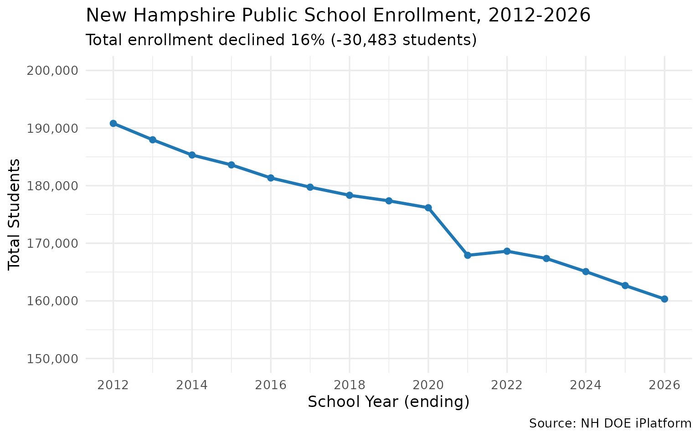
2. COVID erased 8,259 students in a single year
The 2020-21 school year saw a 4.7% enrollment drop — by far the largest single-year decline in the dataset. NH has not recovered.
covid <- enr |>
filter(is_state, subgroup == "total_enrollment", grade_level == "TOTAL",
end_year %in% 2019:2022) |>
select(end_year, n_students) |>
arrange(end_year) |>
mutate(
yoy_change = n_students - lag(n_students),
yoy_pct = round((n_students / lag(n_students) - 1) * 100, 1)
)
stopifnot(nrow(covid) == 4)
covid
#> end_year n_students yoy_change yoy_pct
#> 1 2019 177365 NA NA
#> 2 2020 176168 -1197 -0.7
#> 3 2021 167909 -8259 -4.7
#> 4 2022 168620 711 0.4
yoy <- enr |>
filter(is_state, subgroup == "total_enrollment", grade_level == "TOTAL") |>
select(end_year, n_students) |>
arrange(end_year) |>
mutate(yoy_change = n_students - lag(n_students)) |>
filter(!is.na(yoy_change))
ggplot(yoy, aes(x = end_year, y = yoy_change, fill = yoy_change < 0)) +
geom_col() +
scale_fill_manual(values = c("TRUE" = "#d62728", "FALSE" = "#2ca02c"), guide = "none") +
scale_x_continuous(breaks = seq(2013, 2026, 1)) +
scale_y_continuous(labels = scales::comma) +
labs(
title = "Year-over-Year Change in NH Enrollment",
subtitle = "COVID-19 caused an unprecedented 8,259-student drop in 2021",
x = "School Year (ending)",
y = "Change from Previous Year",
caption = "Source: NH DOE iPlatform"
) +
theme_minimal(base_size = 13) +
theme(axis.text.x = element_text(angle = 45, hjust = 1))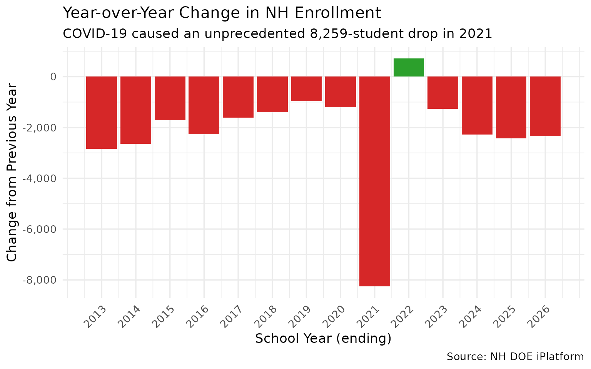
3. Charter schools grew from 0.6% to 3.9% of enrollment
While total enrollment shrank, charter schools quintupled their share — from 9 charters with 1,090 students in 2012 to 35 charters with 6,242 in 2026.
charter_names <- enr |>
filter(is_district, end_year == 2026) |>
filter(grepl("Charter|Chartered", district_name, ignore.case = TRUE)) |>
distinct(district_name) |>
pull()
charter_trend <- enr |>
filter(is_district, subgroup == "total_enrollment", grade_level == "TOTAL",
district_name %in% charter_names) |>
group_by(end_year) |>
summarize(
n_charter = sum(n_students, na.rm = TRUE),
n_charters = n(),
.groups = "drop"
)
state_total <- enr |>
filter(is_state, subgroup == "total_enrollment", grade_level == "TOTAL") |>
select(end_year, state_total = n_students)
charter_pct <- charter_trend |>
left_join(state_total, by = "end_year") |>
mutate(pct = round(n_charter / state_total * 100, 1))
stopifnot(nrow(charter_pct) > 0)
charter_pct
#> # A tibble: 15 × 5
#> end_year n_charter n_charters state_total pct
#> <int> <int> <int> <int> <dbl>
#> 1 2012 1090 9 190805 0.6
#> 2 2013 1640 14 187962 0.9
#> 3 2014 1978 15 185320 1.1
#> 4 2015 2426 19 183604 1.3
#> 5 2016 2890 21 181339 1.6
#> 6 2017 3297 21 179734 1.8
#> 7 2018 3421 21 178328 1.9
#> 8 2019 3752 23 177365 2.1
#> 9 2020 3993 23 176168 2.3
#> 10 2021 4336 24 167909 2.6
#> 11 2022 4756 25 168620 2.8
#> 12 2023 5211 27 167357 3.1
#> 13 2024 5460 29 165082 3.3
#> 14 2025 5938 31 162660 3.7
#> 15 2026 6242 35 160322 3.9
ggplot(charter_pct, aes(x = end_year)) +
geom_col(aes(y = n_charter), fill = "#ff7f0e", alpha = 0.8) +
geom_text(aes(y = n_charter, label = paste0(pct, "%")),
vjust = -0.5, size = 3.5) +
scale_x_continuous(breaks = seq(2012, 2026, 2)) +
scale_y_continuous(labels = scales::comma) +
labs(
title = "NH Charter School Enrollment, 2012-2026",
subtitle = "From 9 charters (0.6%) to 35 charters (3.9%) of total enrollment",
x = "School Year (ending)",
y = "Charter School Students",
caption = "Source: NH DOE iPlatform"
) +
theme_minimal(base_size = 13)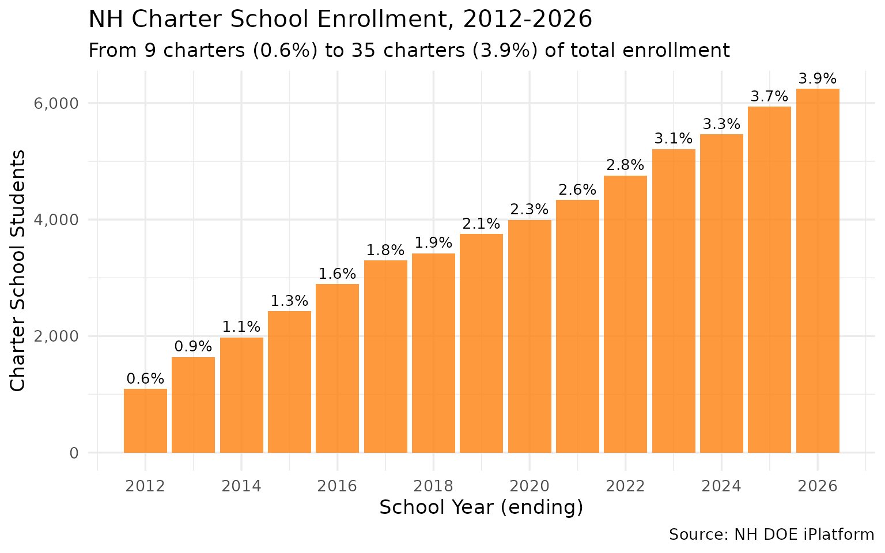
District deep dives
4. Manchester lost nearly a quarter of its students
New Hampshire’s largest city saw enrollment drop from 15,536 to 11,712 — a loss of 3,824 students (24.6%) while maintaining 20 schools.
big2 <- enr |>
filter(is_district, subgroup == "total_enrollment", grade_level == "TOTAL",
district_name %in% c("Manchester", "Nashua")) |>
select(end_year, district_name, n_students) |>
arrange(end_year, district_name)
stopifnot(nrow(big2) > 0)
big2 |>
filter(end_year %in% c(2012, 2018, 2026)) |>
pivot_wider(names_from = district_name, values_from = n_students)
#> # A tibble: 3 × 3
#> end_year Manchester Nashua
#> <int> <int> <int>
#> 1 2012 15536 11894
#> 2 2018 13621 11075
#> 3 2026 11712 9501
ggplot(big2, aes(x = end_year, y = n_students, color = district_name)) +
geom_line(linewidth = 1.1) +
geom_point(size = 2) +
scale_y_continuous(labels = scales::comma) +
scale_x_continuous(breaks = seq(2012, 2026, 2)) +
scale_color_manual(values = c("Manchester" = "#1f77b4", "Nashua" = "#d62728")) +
labs(
title = "Manchester vs Nashua: NH's Two Largest Districts",
subtitle = "Both declining, but Manchester lost 3,824 students (-24.6%)",
x = "School Year (ending)",
y = "Total Students",
color = "District",
caption = "Source: NH DOE iPlatform"
) +
theme_minimal(base_size = 13)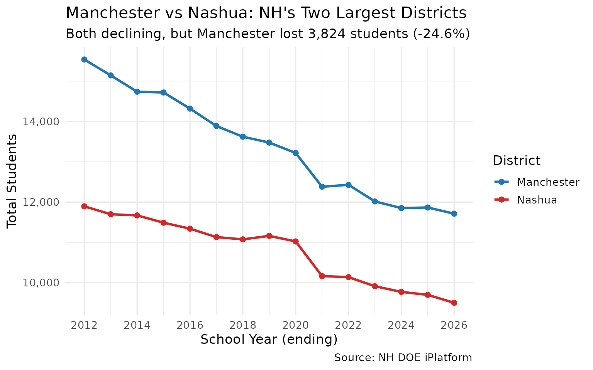
5. Errol has 12 students — the state’s tiniest district
New Hampshire has dozens of districts with fewer than 100 students. The smallest, Errol, has just 12 — smaller than most college seminar classes.
smallest <- enr |>
filter(is_district, subgroup == "total_enrollment", grade_level == "TOTAL",
end_year == 2026) |>
select(district_name, sau, sau_name, n_students) |>
arrange(n_students) |>
head(10)
stopifnot(nrow(smallest) > 0)
smallest
#> district_name sau
#> 1 Errol 20
#> 2 Landaff 35
#> 3 North Star Academy Chartered Public School 406
#> 4 Jackson 9
#> 5 Croydon 99
#> 6 Stark 58
#> 7 Marlow 29
#> 8 CSI Charter School 410
#> 9 NH Career Academy Chartered Public School 421
#> 10 Waterville Valley 48
#> sau_name n_students
#> 1 Gorham 12
#> 2 SAU #35 Office 15
#> 3 North Star Academy Chartered Public School 17
#> 4 Conway 26
#> 5 Croydon 28
#> 6 Northumberland 30
#> 7 Keene 32
#> 8 CSI Charter School 32
#> 9 NH Career Academy Chartered Public School 32
#> 10 Plymouth 34
smallest_plot <- smallest |>
mutate(district_name = forcats::fct_reorder(district_name, n_students))
ggplot(smallest_plot, aes(x = district_name, y = n_students)) +
geom_col(fill = "#2ca02c") +
geom_text(aes(label = n_students), hjust = -0.3, size = 3.5) +
coord_flip() +
labs(
title = "NH's 10 Smallest School Districts (2025-26)",
subtitle = "Errol has just 12 students enrolled",
x = NULL,
y = "Total Students",
caption = "Source: NH DOE iPlatform"
) +
theme_minimal(base_size = 13)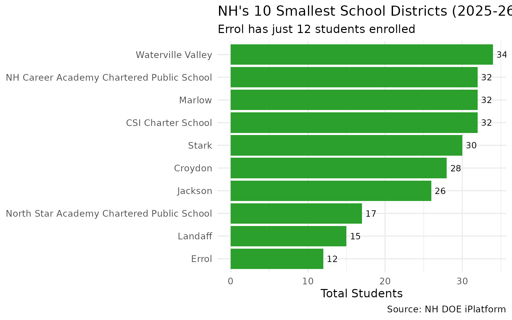
6. Virtual Learning Academy grew 756% — the biggest gainer
While most districts shrank, Virtual Learning Academy Charter School grew from 63 students in 2012 to 539 in 2026 — a 756% increase.
changes <- enr |>
filter(is_district, subgroup == "total_enrollment", grade_level == "TOTAL",
end_year %in% c(2012, 2026)) |>
select(end_year, district_name, n_students) |>
pivot_wider(names_from = end_year, values_from = n_students,
names_prefix = "y") |>
filter(!is.na(y2012), !is.na(y2026)) |>
mutate(
change = y2026 - y2012,
pct_change = round((y2026 / y2012 - 1) * 100, 1)
)
stopifnot(nrow(changes) > 0)
cat("Top 5 gainers:\n")
#> Top 5 gainers:
changes |> arrange(desc(pct_change)) |> head(5)
#> # A tibble: 5 × 5
#> district_name y2012 y2026 change pct_change
#> <chr> <int> <int> <int> <dbl>
#> 1 Virtual Learning Academy Charter School 63 539 476 756.
#> 2 Academy for Science and Design Charter School 285 671 386 135.
#> 3 Nelson 25 58 33 132
#> 4 Strong Foundations Charter School 172 336 164 95.3
#> 5 Ledyard Charter School 29 49 20 69
top_gainers <- changes |>
arrange(desc(change)) |>
head(8) |>
mutate(district_name = forcats::fct_reorder(district_name, change))
ggplot(top_gainers, aes(x = district_name, y = change, fill = change > 0)) +
geom_col() +
geom_text(aes(label = paste0(ifelse(change > 0, "+", ""), change)),
hjust = -0.1, size = 3.5) +
coord_flip() +
scale_fill_manual(values = c("TRUE" = "#2ca02c"), guide = "none") +
labs(
title = "Districts That Grew Despite Statewide Decline",
subtitle = "2012 to 2026, absolute student change",
x = NULL,
y = "Change in Students",
caption = "Source: NH DOE iPlatform"
) +
theme_minimal(base_size = 13)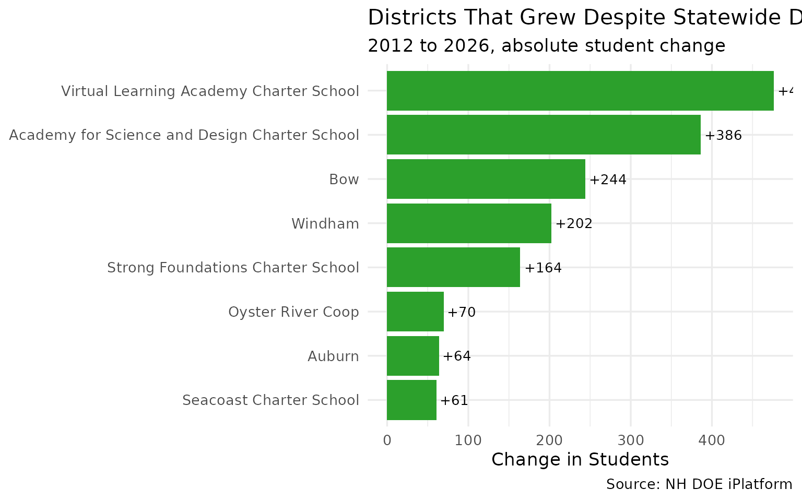
7. Top 5 losers account for 9,481 lost students
The five largest districts — Manchester, Nashua, Hudson, Concord, and Londonderry — together lost 9,481 students, nearly a third of the statewide decline.
top_losers <- changes |>
arrange(change) |>
head(5)
stopifnot(nrow(top_losers) == 5)
top_losers
#> # A tibble: 5 × 5
#> district_name y2012 y2026 change pct_change
#> <chr> <int> <int> <int> <dbl>
#> 1 Manchester 15536 11712 -3824 -24.6
#> 2 Nashua 11894 9501 -2393 -20.1
#> 3 Hudson 4052 2875 -1177 -29
#> 4 Concord 4842 3755 -1087 -22.4
#> 5 Londonderry 4847 3847 -1000 -20.6
losers_trend <- enr |>
filter(is_district, subgroup == "total_enrollment", grade_level == "TOTAL",
district_name %in% top_losers$district_name) |>
select(end_year, district_name, n_students)
ggplot(losers_trend, aes(x = end_year, y = n_students, color = district_name)) +
geom_line(linewidth = 1) +
geom_point(size = 1.5) +
scale_y_continuous(labels = scales::comma) +
scale_x_continuous(breaks = seq(2012, 2026, 2)) +
labs(
title = "NH's 5 Biggest Losers: Enrollment Since 2012",
subtitle = "Combined loss of 9,481 students (31% of statewide decline)",
x = "School Year (ending)",
y = "Total Students",
color = "District",
caption = "Source: NH DOE iPlatform"
) +
theme_minimal(base_size = 13)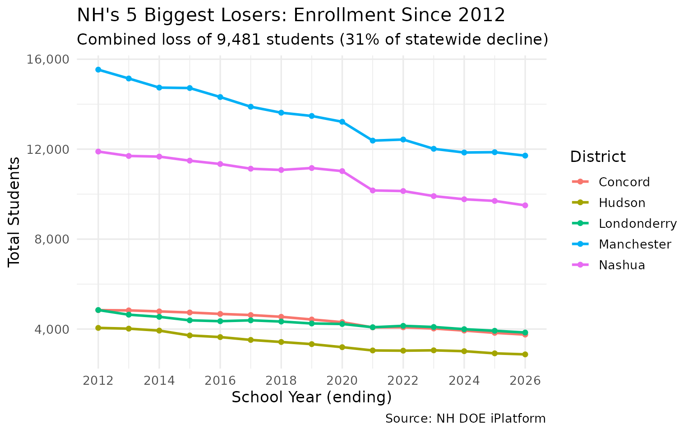
Grade-level patterns
8. Grade 12 consistently outnumbers Grade 1
Every year since 2012, more students graduate from 12th grade than enter 1st grade — a demographic signature of sustained population decline.
pipeline <- enr |>
filter(is_campus, subgroup == "total_enrollment",
grade_level %in% c("01", "12")) |>
group_by(end_year, grade_level) |>
summarize(n = sum(n_students, na.rm = TRUE), .groups = "drop") |>
pivot_wider(names_from = grade_level, values_from = n) |>
rename(grade_01 = `01`, grade_12 = `12`) |>
mutate(ratio = round(grade_12 / grade_01, 2))
stopifnot(nrow(pipeline) > 0)
pipeline
#> # A tibble: 15 × 4
#> end_year grade_01 grade_12 ratio
#> <int> <int> <int> <dbl>
#> 1 2012 13595 14673 1.08
#> 2 2013 13609 14404 1.06
#> 3 2014 13461 13962 1.04
#> 4 2015 13157 13671 1.04
#> 5 2016 12898 13752 1.07
#> 6 2017 12377 13338 1.08
#> 7 2018 12678 13235 1.04
#> 8 2019 12351 13080 1.06
#> 9 2020 12501 13172 1.05
#> 10 2021 11675 13114 1.12
#> 11 2022 11754 12867 1.09
#> 12 2023 12099 12471 1.03
#> 13 2024 11687 12502 1.07
#> 14 2025 11278 12493 1.11
#> 15 2026 11169 12388 1.11
pipeline_long <- pipeline |>
pivot_longer(cols = c(grade_01, grade_12), names_to = "grade",
values_to = "students") |>
mutate(grade = ifelse(grade == "grade_01", "Grade 1", "Grade 12"))
ggplot(pipeline_long, aes(x = end_year, y = students, color = grade)) +
geom_line(linewidth = 1.1) +
geom_point(size = 2) +
scale_y_continuous(labels = scales::comma) +
scale_x_continuous(breaks = seq(2012, 2026, 2)) +
scale_color_manual(values = c("Grade 1" = "#2ca02c", "Grade 12" = "#9467bd")) +
labs(
title = "Grade 1 vs Grade 12 Enrollment",
subtitle = "More students exit than enter NH public schools each year",
x = "School Year (ending)",
y = "Students",
color = NULL,
caption = "Source: NH DOE iPlatform (school-level data)"
) +
theme_minimal(base_size = 13)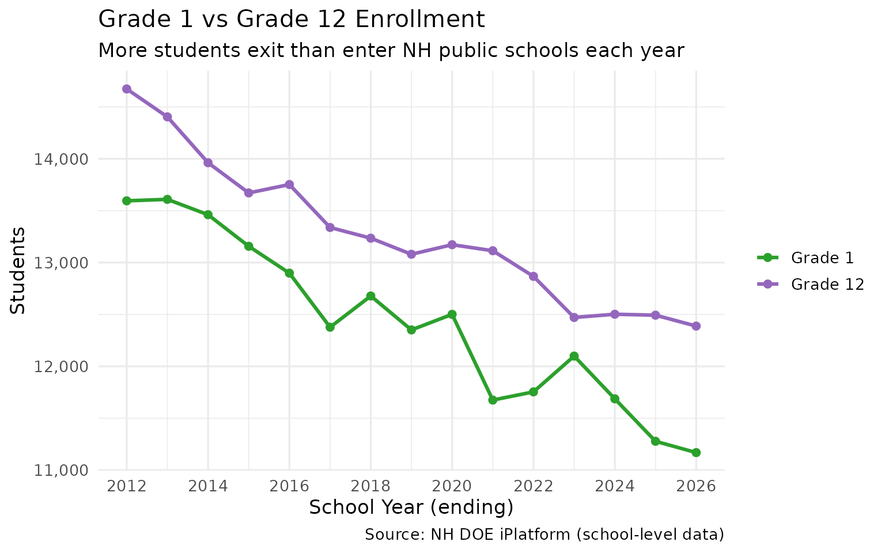
9. PreK enrollment grew 39% while everything else shrank
PreK enrollment rose from 3,165 to 4,395 — a 39% increase — even as overall enrollment fell 16%. The COVID crash in 2021 hit PreK hardest (37% drop) but it fully recovered by 2023.
prek <- enr |>
filter(is_state, subgroup == "total_enrollment", grade_level == "PK") |>
select(end_year, n_students) |>
arrange(end_year)
stopifnot(nrow(prek) > 0)
prek
#> end_year n_students
#> 1 2012 3165
#> 2 2013 3200
#> 3 2014 3401
#> 4 2015 3557
#> 5 2016 3670
#> 6 2017 3894
#> 7 2018 3876
#> 8 2019 4192
#> 9 2020 4518
#> 10 2021 2908
#> 11 2022 3848
#> 12 2023 4385
#> 13 2024 4440
#> 14 2025 4385
#> 15 2026 4395
ggplot(prek, aes(x = end_year, y = n_students)) +
geom_line(linewidth = 1.2, color = "#ff7f0e") +
geom_point(size = 2, color = "#ff7f0e") +
scale_y_continuous(labels = scales::comma) +
scale_x_continuous(breaks = seq(2012, 2026, 2)) +
labs(
title = "PreK Enrollment Bucked the Statewide Decline",
subtitle = "Grew 39% (3,165 to 4,395) while total enrollment fell 16%",
x = "School Year (ending)",
y = "PreK Students",
caption = "Source: NH DOE iPlatform"
) +
theme_minimal(base_size = 13)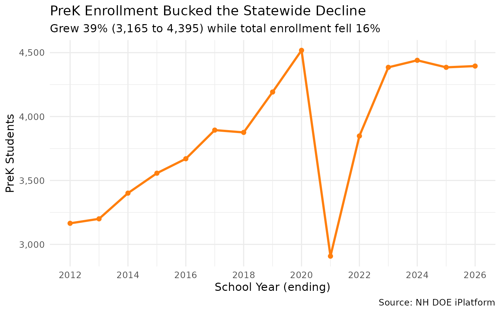
10. Kindergarten lost 1,177 students since 2012
Kindergarten enrollment dropped from 11,904 to 10,727 — a 10% decline that signals continued enrollment losses ahead.
k_trend <- enr |>
filter(is_campus, subgroup == "total_enrollment", grade_level == "K") |>
group_by(end_year) |>
summarize(n_students = sum(n_students, na.rm = TRUE), .groups = "drop")
stopifnot(nrow(k_trend) > 0)
k_trend
#> # A tibble: 15 × 2
#> end_year n_students
#> <int> <int>
#> 1 2012 11904
#> 2 2013 11888
#> 3 2014 11602
#> 4 2015 11570
#> 5 2016 11187
#> 6 2017 11422
#> 7 2018 11415
#> 8 2019 11691
#> 9 2020 11689
#> 10 2021 10111
#> 11 2022 11212
#> 12 2023 11074
#> 13 2024 10893
#> 14 2025 10871
#> 15 2026 10727
ggplot(k_trend, aes(x = end_year, y = n_students)) +
geom_line(linewidth = 1.2, color = "#17becf") +
geom_point(size = 2, color = "#17becf") +
scale_y_continuous(labels = scales::comma) +
scale_x_continuous(breaks = seq(2012, 2026, 2)) +
labs(
title = "Kindergarten Enrollment, 2012-2026",
subtitle = "Down 10% — each incoming class is smaller than the last",
x = "School Year (ending)",
y = "Kindergarten Students",
caption = "Source: NH DOE iPlatform (school-level data)"
) +
theme_minimal(base_size = 13)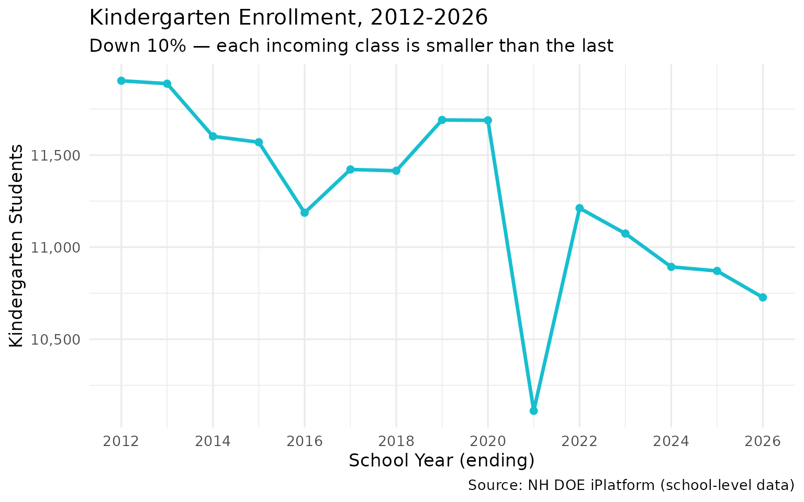
Structural patterns
11. 111 one-school districts vs Manchester’s 20
Over half of NH’s districts have just one school. Meanwhile Manchester operates 20 — nearly as many as the bottom 40 districts combined.
schools_per <- enr |>
filter(is_campus, subgroup == "total_enrollment", grade_level == "TOTAL",
end_year == 2026) |>
group_by(district_name) |>
summarize(n_schools = n(), .groups = "drop") |>
arrange(desc(n_schools))
stopifnot(nrow(schools_per) > 0)
cat("Districts by school count:\n")
#> Districts by school count:
schools_per |>
mutate(category = case_when(
n_schools == 1 ~ "1 school",
n_schools <= 3 ~ "2-3 schools",
n_schools <= 10 ~ "4-10 schools",
TRUE ~ "11+ schools"
)) |>
count(category)
#> # A tibble: 4 × 2
#> category n
#> <chr> <int>
#> 1 1 school 111
#> 2 11+ schools 4
#> 3 2-3 schools 51
#> 4 4-10 schools 37
schools_hist <- schools_per |>
mutate(bucket = cut(n_schools, breaks = c(0, 1, 3, 5, 10, 20),
labels = c("1", "2-3", "4-5", "6-10", "11-20")))
ggplot(schools_hist, aes(x = bucket)) +
geom_bar(fill = "#1f77b4") +
geom_text(stat = "count", aes(label = after_stat(count)), vjust = -0.5) +
labs(
title = "How Many Schools Do NH Districts Operate? (2025-26)",
subtitle = "111 districts have just one school; Manchester has 20",
x = "Number of Schools",
y = "Number of Districts",
caption = "Source: NH DOE iPlatform"
) +
theme_minimal(base_size = 13)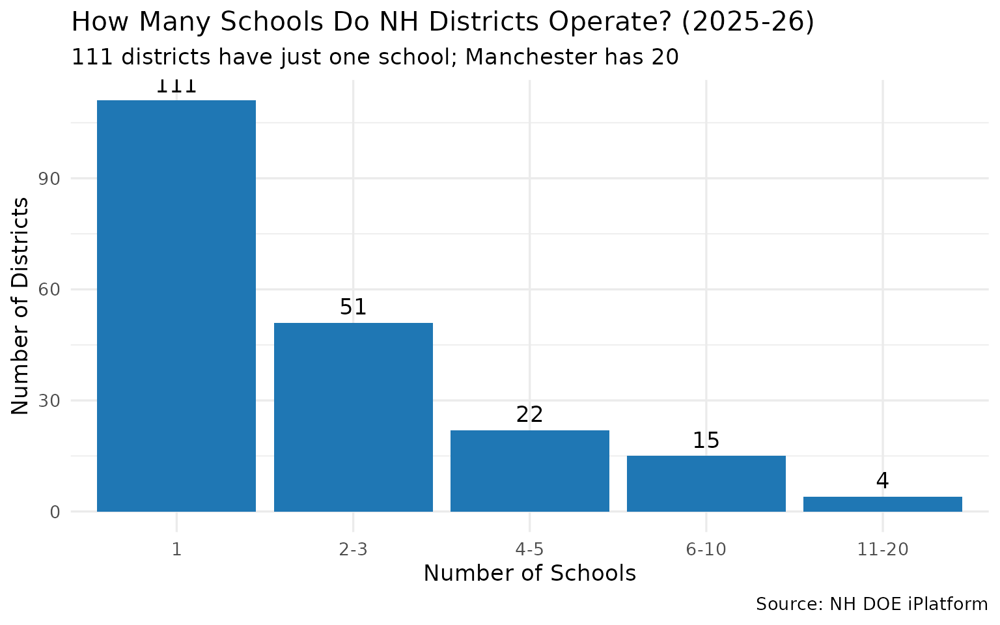
12. The SAU system: one administrator, multiple districts
New Hampshire’s School Administrative Units (SAUs) are a unique feature. Plymouth SAU #48 covers 8 districts, allowing tiny towns to share administrative costs.
sau_multi <- enr |>
filter(is_district, subgroup == "total_enrollment", grade_level == "TOTAL",
end_year == 2026) |>
group_by(sau, sau_name) |>
summarize(
n_districts = n(),
total_students = sum(n_students, na.rm = TRUE),
districts = paste(district_name, collapse = ", "),
.groups = "drop"
) |>
arrange(desc(n_districts))
stopifnot(nrow(sau_multi) > 0)
sau_multi |> head(8)
#> # A tibble: 8 × 5
#> sau sau_name n_districts total_students districts
#> <chr> <chr> <int> <int> <chr>
#> 1 48 Plymouth 8 1753 Campton, Holderness, P…
#> 2 16 Exeter 7 4147 Brentwood, East Kingst…
#> 3 29 Keene 7 3583 Chesterfield, Harrisvi…
#> 4 21 Winnacunnet 5 2044 Hampton Falls, North H…
#> 5 35 SAU #35 Office 5 726 Bethlehem, Lafayette R…
#> 6 53 Pembroke 5 2695 Allenstown, Chichester…
#> 7 23 Haverhill Cooperative 4 771 Bath, Haverhill Cooper…
#> 8 24 Henniker 4 1869 Henniker, John Stark R…
sau_top <- sau_multi |>
head(10) |>
mutate(sau_label = paste0("SAU ", sau, " (", sau_name, ")")) |>
mutate(sau_label = forcats::fct_reorder(sau_label, n_districts))
ggplot(sau_top, aes(x = sau_label, y = n_districts)) +
geom_col(fill = "#9467bd") +
geom_text(aes(label = paste0(n_districts, " districts\n(",
scales::comma(total_students), " students)")),
hjust = -0.05, size = 3) +
coord_flip() +
labs(
title = "SAUs with the Most Districts (2025-26)",
subtitle = "Plymouth SAU #48 covers 8 independent districts",
x = NULL,
y = "Number of Districts",
caption = "Source: NH DOE iPlatform"
) +
theme_minimal(base_size = 13) +
theme(plot.margin = margin(5.5, 40, 5.5, 5.5))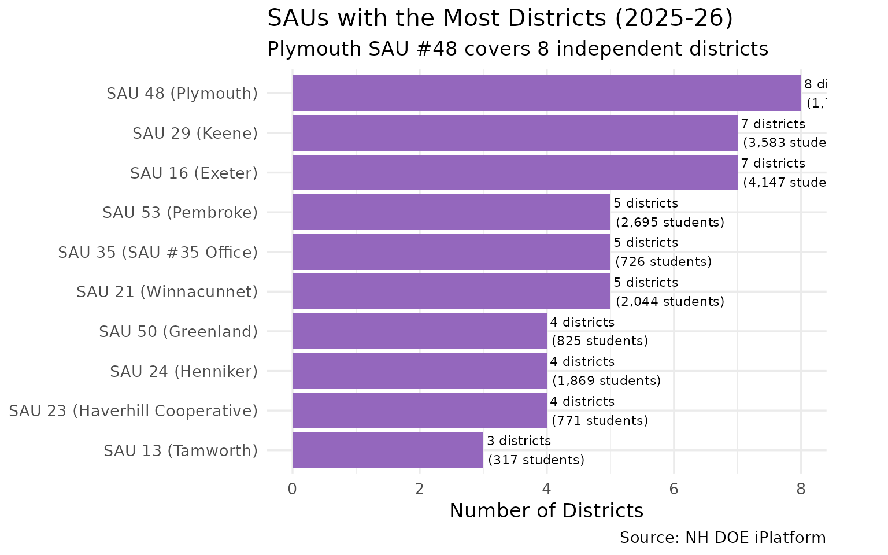
13. North Country lost 26% of its students
The remote northern districts (Coos County area) saw enrollment drop from 2,526 to 1,859 — a 26% decline, steeper than the statewide average.
north_country <- c("Berlin", "Gorham", "Milan", "Errol", "Pittsburg",
"Colebrook", "Stark", "Stratford", "Stewartstown",
"Northumberland", "Lancaster", "Whitefield", "Dalton")
nc_trend <- enr |>
filter(is_district, subgroup == "total_enrollment", grade_level == "TOTAL",
district_name %in% north_country) |>
group_by(end_year) |>
summarize(
n_students = sum(n_students, na.rm = TRUE),
n_districts = n(),
.groups = "drop"
)
stopifnot(nrow(nc_trend) > 0)
nc_trend
#> # A tibble: 15 × 3
#> end_year n_students n_districts
#> <int> <int> <int>
#> 1 2012 2526 9
#> 2 2013 2522 9
#> 3 2014 2466 9
#> 4 2015 2389 9
#> 5 2016 2300 9
#> 6 2017 2277 9
#> 7 2018 2228 9
#> 8 2019 2181 9
#> 9 2020 2153 9
#> 10 2021 2053 9
#> 11 2022 2038 9
#> 12 2023 2009 9
#> 13 2024 1959 9
#> 14 2025 1907 9
#> 15 2026 1859 9
ggplot(nc_trend, aes(x = end_year, y = n_students)) +
geom_line(linewidth = 1.2, color = "#d62728") +
geom_point(size = 2, color = "#d62728") +
scale_y_continuous(labels = scales::comma) +
scale_x_continuous(breaks = seq(2012, 2026, 2)) +
labs(
title = "North Country Enrollment: Faster Decline Than the State",
subtitle = "Coos County area districts lost 26% of students (2,526 to 1,859)",
x = "School Year (ending)",
y = "Total Students",
caption = "Source: NH DOE iPlatform"
) +
theme_minimal(base_size = 13)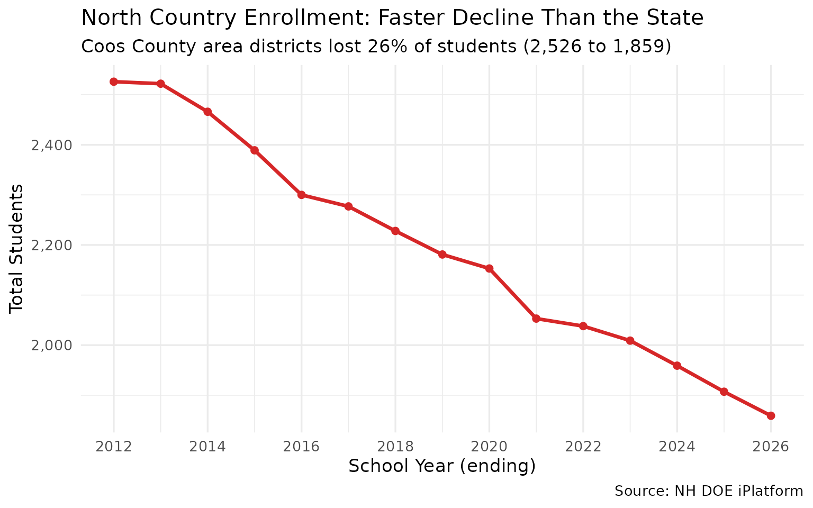
14. Southern NH’s Boston corridor also losing students
Even districts near the Massachusetts border — traditionally NH’s growth engine — are declining. Salem, Windham, Londonderry, and Hudson together lost 3,432 students.
south_nh <- c("Salem", "Windham", "Londonderry", "Derry", "Hudson",
"Pelham", "Hampstead", "Atkinson", "Plaistow", "Sandown")
snh_trend <- enr |>
filter(is_district, subgroup == "total_enrollment", grade_level == "TOTAL",
district_name %in% south_nh) |>
group_by(end_year) |>
summarize(n_students = sum(n_students, na.rm = TRUE), .groups = "drop")
stopifnot(nrow(snh_trend) > 0)
snh_trend |> filter(end_year %in% c(2012, 2020, 2026))
#> # A tibble: 3 × 2
#> end_year n_students
#> <int> <int>
#> 1 2012 18887
#> 2 2020 16638
#> 3 2026 15455
# Compare Southern NH vs State (indexed to 2012 = 100)
state_idx <- state_trend |>
mutate(index = round(n_students / first(n_students) * 100, 1),
region = "Statewide")
snh_idx <- snh_trend |>
mutate(index = round(n_students / first(n_students) * 100, 1),
region = "Southern NH (Boston corridor)")
nc_idx <- nc_trend |>
mutate(index = round(n_students / first(n_students) * 100, 1),
region = "North Country")
combined <- bind_rows(
state_idx |> select(end_year, index, region),
snh_idx |> select(end_year, index, region),
nc_idx |> select(end_year, index, region)
)
ggplot(combined, aes(x = end_year, y = index, color = region)) +
geom_line(linewidth = 1.1) +
geom_point(size = 2) +
geom_hline(yintercept = 100, linetype = "dashed", alpha = 0.5) +
scale_x_continuous(breaks = seq(2012, 2026, 2)) +
labs(
title = "Regional Enrollment Decline (Indexed to 2012 = 100)",
subtitle = "North Country declining fastest, but even Southern NH is down",
x = "School Year (ending)",
y = "Index (2012 = 100)",
color = NULL,
caption = "Source: NH DOE iPlatform"
) +
theme_minimal(base_size = 13) +
theme(legend.position = "bottom")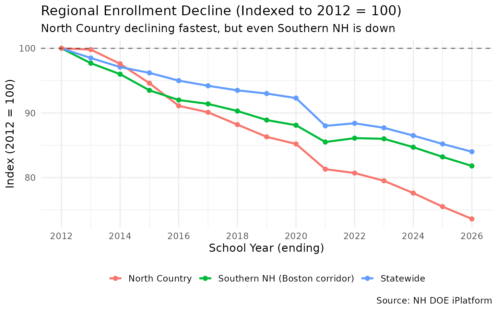
15. The grade pyramid: where NH’s students are
The 2025-26 grade distribution shows that upper grades have more students than lower grades — confirming the downward demographic trend. Grade 9 has the most students (13,156), while Grade 1 has the fewest K-12 (11,169).
grade_dist <- enr |>
filter(is_campus, subgroup == "total_enrollment",
end_year == 2026,
!grade_level %in% c("TOTAL", "ELEM", "MIDDLE", "HIGH")) |>
group_by(grade_level) |>
summarize(n_students = sum(n_students, na.rm = TRUE), .groups = "drop") |>
arrange(grade_level)
stopifnot(nrow(grade_dist) > 0)
grade_dist
#> # A tibble: 15 × 2
#> grade_level n_students
#> <chr> <int>
#> 1 01 11169
#> 2 02 11331
#> 3 03 11677
#> 4 04 12160
#> 5 05 11983
#> 6 06 12095
#> 7 07 12311
#> 8 08 12256
#> 9 09 13156
#> 10 10 12213
#> 11 11 12339
#> 12 12 12388
#> 13 K 10727
#> 14 PG 73
#> 15 PK 4395
grade_order <- c("PK", "K", "01", "02", "03", "04", "05", "06",
"07", "08", "09", "10", "11", "12", "PG")
grade_labels <- c("PreK", "K", "1", "2", "3", "4", "5", "6",
"7", "8", "9", "10", "11", "12", "PG")
grade_plot <- grade_dist |>
mutate(
grade_level = factor(grade_level, levels = grade_order, labels = grade_labels)
) |>
filter(!is.na(grade_level))
ggplot(grade_plot, aes(x = grade_level, y = n_students)) +
geom_col(fill = "#1f77b4") +
geom_text(aes(label = scales::comma(n_students)), vjust = -0.3, size = 3) +
scale_y_continuous(labels = scales::comma) +
labs(
title = "NH Enrollment by Grade Level (2025-26)",
subtitle = "Upper grades larger than lower — demographic contraction in real time",
x = "Grade",
y = "Students",
caption = "Source: NH DOE iPlatform (school-level data)"
) +
theme_minimal(base_size = 13)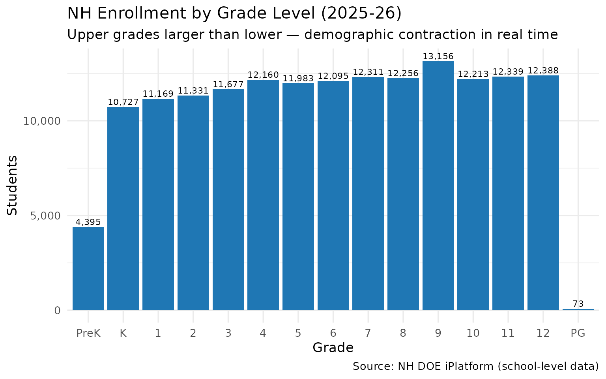
Session Info
sessionInfo()
#> R version 4.5.2 (2025-10-31)
#> Platform: x86_64-pc-linux-gnu
#> Running under: Ubuntu 24.04.3 LTS
#>
#> Matrix products: default
#> BLAS: /usr/lib/x86_64-linux-gnu/openblas-pthread/libblas.so.3
#> LAPACK: /usr/lib/x86_64-linux-gnu/openblas-pthread/libopenblasp-r0.3.26.so; LAPACK version 3.12.0
#>
#> locale:
#> [1] LC_CTYPE=C.UTF-8 LC_NUMERIC=C LC_TIME=C.UTF-8
#> [4] LC_COLLATE=C.UTF-8 LC_MONETARY=C.UTF-8 LC_MESSAGES=C.UTF-8
#> [7] LC_PAPER=C.UTF-8 LC_NAME=C LC_ADDRESS=C
#> [10] LC_TELEPHONE=C LC_MEASUREMENT=C.UTF-8 LC_IDENTIFICATION=C
#>
#> time zone: UTC
#> tzcode source: system (glibc)
#>
#> attached base packages:
#> [1] stats graphics grDevices utils datasets methods base
#>
#> other attached packages:
#> [1] tidyr_1.3.2 ggplot2_4.0.2 dplyr_1.2.0 nhschooldata_0.2.0
#> [5] testthat_3.3.2
#>
#> loaded via a namespace (and not attached):
#> [1] gtable_0.3.6 jsonlite_2.0.0 compiler_4.5.2 brio_1.1.5
#> [5] tidyselect_1.2.1 jquerylib_0.1.4 systemfonts_1.3.1 scales_1.4.0
#> [9] textshaping_1.0.4 yaml_2.3.12 fastmap_1.2.0 R6_2.6.1
#> [13] labeling_0.4.3 generics_0.1.4 knitr_1.51 forcats_1.0.1
#> [17] tibble_3.3.1 desc_1.4.3 bslib_0.10.0 pillar_1.11.1
#> [21] RColorBrewer_1.1-3 rlang_1.1.7 utf8_1.2.6 cachem_1.1.0
#> [25] xfun_0.56 fs_1.6.6 sass_0.4.10 S7_0.2.1
#> [29] cli_3.6.5 withr_3.0.2 pkgdown_2.2.0 magrittr_2.0.4
#> [33] digest_0.6.39 grid_4.5.2 rappdirs_0.3.4 lifecycle_1.0.5
#> [37] vctrs_0.7.1 evaluate_1.0.5 glue_1.8.0 farver_2.1.2
#> [41] codetools_0.2-20 ragg_1.5.0 purrr_1.2.1 rmarkdown_2.30
#> [45] tools_4.5.2 pkgconfig_2.0.3 htmltools_0.5.9